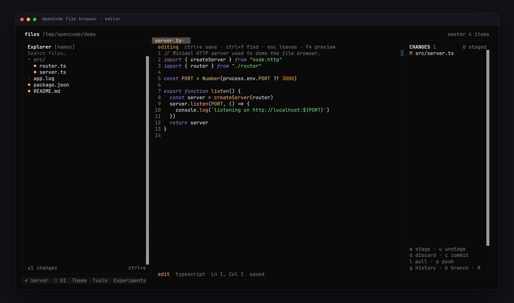
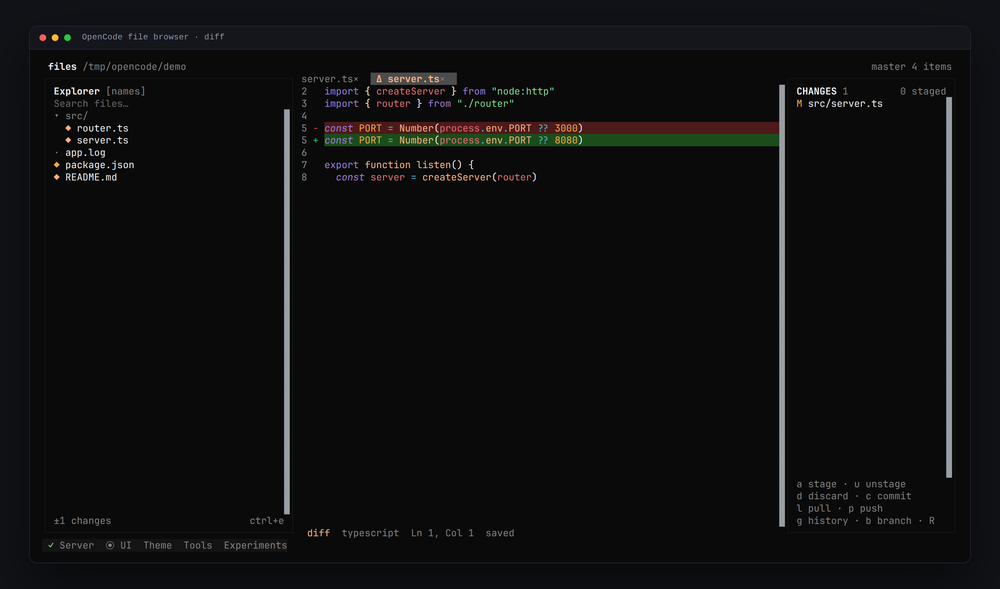
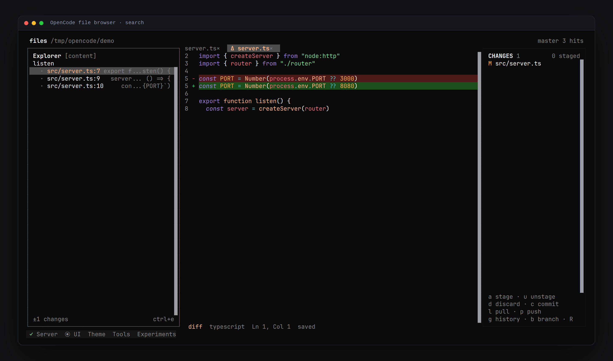
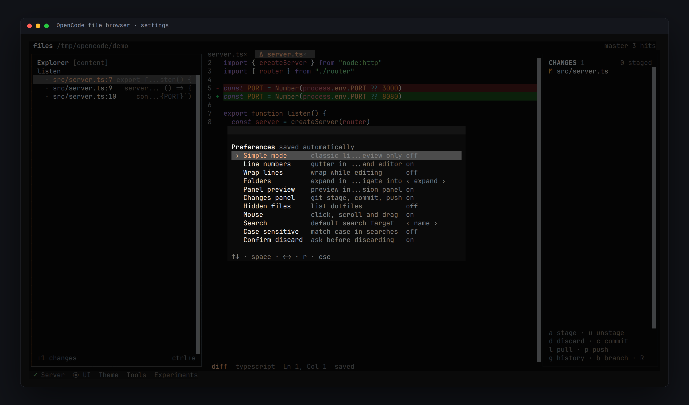

Files, editing and git
inside the TUI.
A file explorer, editor and review panel for OpenCode. Tabs, line numbers, syntax colours, diffs and commits without leaving the session — and a simple mode that keeps the original list + preview browser.
opencode plugin add opencode-file-browser@latest

Features
◆ Explorer
Expand folders in place or navigate into them. Search by name or content, toggle dotfiles, see the branch and the number of changes.
◆ Editor
Real editing in the host textarea: tabs, line numbers, syntax colours, Enter for a new line, Ctrl+F in the file, Ctrl+S to save, scrollbar and click-to-place cursor.
◆ Changes
Stage, unstage, discard, commit, pull, push, branches and history. Enter opens a unified diff; F4 jumps to the real file.
◆ Preferences
F2 opens a modal with simple mode, line numbers, wrap, folder behaviour, panel preview, hidden files, mouse, search target and case sensitivity.
◆ Big files
The first 2 000 lines are rendered. Huge logs show a metadata placeholder instead of freezing the terminal.
◆ Keyboard and mouse
Everything reachable from the keyboard, everything available in the command palette. Click, wheel, drag the divider, right click for actions.
Screenshots



Keys
| Key | Action |
|---|---|
| Ctrl+X F | open or close the browser |
| Ctrl+X O | open a file by path |
| ↑ ↓ j k | move in the list |
| → / Enter | open a file or expand a folder |
| Tab / Shift+Tab | cycle panes / back to the explorer |
| Ctrl+F / Ctrl+E | search / switch name ↔ content |
| e / F4 | preview ↔ editor |
| Ctrl+S / Ctrl+W | save / close tab |
| F1 / F2 / F3 | shortcuts / preferences / changes |
| F10 | item actions (new, rename, delete, close tabs) |
| Esc | leave editor → clear search → close |